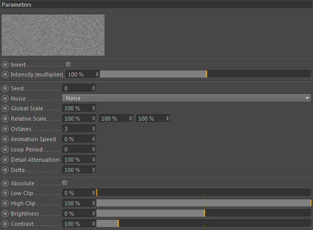

Parameters
Parameters
The noise constraint allows to use a usual C4D noise to drive other nodes.
This is a great choice to modulate emissions of grid data but also particles (e.g. black noise values would not let an emitter generate particles) or forces.
As all the settings are known from Cinema 4D we refer you to the C4D help and the Noise channel shader page
and will not list a description of the settings in here ("no need to reinvent the wheel" argument ;).
